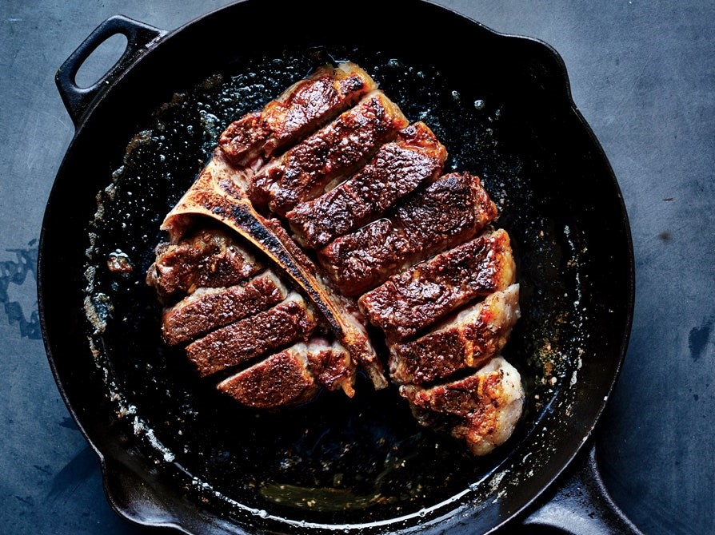
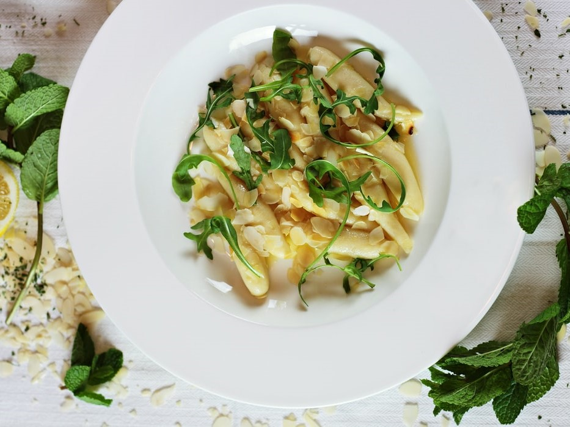

Try some of our team's favorite recipes!

Perfect Porterhouse Steak
Perfect Porterhouse Steak
Servings: 4 | Recipe From: Bon AppetitIngredients
1 - 2" thick Porterhouse steak
Kosher salt and freshly ground black pepper
Kosher salt and freshly ground black pepper
1 tbsp vegetable oil
3 tbsp unsalted butter, room temperature
3 tbsp unsalted butter, room temperature
Instructions
- Let steak sit at room temperature 30 minutes before cooking, which will help it cook quickly and more evenly.
- Heat broiler. Heat a large skillet, preferably cast iron, over medium-high heat, then heat oil in pan until smoking. Season steak very generously with salt and pepper and cook until a deep brown crust forms on underside (do not turn), about 4 minutes. Transfer steak to a cutting board, turning it browned side up.
- Cut meat from bone in 2 pieces (strip steak and filet mignon). Slice both pieces straight down perpendicular to the bone 1” thick. Replace sliced steak around the bone (it should look like a whole sliced steak) and return to skillet, browned side up. Top with butter and broil until butter is melted and steak is medium-rare, 4–6 minutes. Serve steak with buttery pan juices spooned over.
Suggested Wine Pairing

Gnocchi Gorgonzola
Gnocchi Gorgonzola
Prep Time: 35 min | Servings: 4 | Recipe From: Food NetworkIngredients
2 tbsp butter
Pinch ground nutmeg
Pinch onion powder
1 pint heavy cream
Homemade or store bought potato gnocchi, cooked
Pinch ground nutmeg
Pinch onion powder
1 pint heavy cream
Homemade or store bought potato gnocchi, cooked
6 oz. Gorgonzola
Pinch ground white pepper
1/4 c. brandy
1/4 c. chopped walnuts
4 slices prosciutto
Pinch ground white pepper
1/4 c. brandy
1/4 c. chopped walnuts
4 slices prosciutto
Instructions
Melt the butter in a large pot over medium-low heat. Add the Gorgonzola and stir until melted. Add nutmeg,
white pepper, and onion powder. Add brandy and flambe. Whisk in the heavy cream until smooth. Bring to a
boil and add the walnuts. Divide gnocchi among 4 bowls and serve sauce immediately over top. Garnish with 1
prosciutto slice per bowl.
Mie Goreng
Mie Goreng
Prep Time: 25 min | Servings: 2 | Recipe From: Recipe Tin EatsIngredients
3 instant noodle cakes
Sauce:
2 tbsp kecap manis
2 tsp light soy sauce
2 tsp dark soy sauce
1 tbsp oyster sauce
2 tbsp ketchup
1 tsp sambal oelak, chilli paste or Sriracha
2 tsp sesame oil
Sauce:
2 tbsp kecap manis
2 tsp light soy sauce
2 tsp dark soy sauce
1 tbsp oyster sauce
2 tbsp ketchup
1 tsp sambal oelak, chilli paste or Sriracha
2 tsp sesame oil
Stir Fried Noodles:
2 tbsp vegetable oil
2 eggs
3 garlic cloves, finely chopped
4 oz chicken breast or thigh, sliced thinly
3.5 oz shrimp
2 c cabbage
1 c beansprouts
3 green onions
2 tbsp vegetable oil
2 eggs
3 garlic cloves, finely chopped
4 oz chicken breast or thigh, sliced thinly
3.5 oz shrimp
2 c cabbage
1 c beansprouts
3 green onions
Instructions
- Mix the Sauce in a bowl.
- Prepare noodles per packet directions just before cooking.
EGG RIBBONS:
- Heat 1 tbsp oil in a large skillet over medium heat. Pour in egg, swirl to coat base. Cook 1 minute until mostly set, then flip (do your best!).
- Slide onto cutting board, roll up into loose "wrap". Slice into 1cm/ 1/3" thick pieces - you now have egg ribbons!
COOKING:
- Heat remaining 1 tbsp oil in same skillet over HIGH heat.
- Add garlic and chicken, cook until half surface turns white.
- Add prawns and cook for 1 minute until chicken is mostly cooked.
- Add cabbage and bean sprouts, toss for 1 minute until a bit wilted.
- Add noodles, green onions and Sauce, toss for 1 - 2 minutes until Sauce reduces and noodles caramelise a bit.
- Toss through egg ribbons and serve immediately!
Suggested Wine Pairing

Bo Luc Lac - Vietnamese Shaking Beef
Bo Luc Lac - Vietnamese Shaking Beef
Prep Time: 30 min | Servings: 4 | Recipe From: The Ravenous CoupleIngredients
Beef Marinade:
1.5 lbs beef sirloin or tender cut such as filet cut into 1″ cubes
2 tbs minced garlic
1.5 tbs sugar
2 tbs oyster sauce
1 tbs fish sauce
1 tbs sesame oil
1 tbs thick soy sauce
1.5 lbs beef sirloin or tender cut such as filet cut into 1″ cubes
2 tbs minced garlic
1.5 tbs sugar
2 tbs oyster sauce
1 tbs fish sauce
1 tbs sesame oil
1 tbs thick soy sauce
Vinaigrette:
1/4 cup rice vinegar
1 ts salt
1 ts sugar
Accompaniments:
1 red onion
1 bunch watercress or any leafy greens
1 tomato sliced thin
1/4 cup rice vinegar
1 ts salt
1 ts sugar
Accompaniments:
1 red onion
1 bunch watercress or any leafy greens
1 tomato sliced thin
Instructions
- Prepare marinade by combining garlic, oyster sauce, sugar, fish sauce, thick soy sauce and sesame oil with the beef for at least half an hour, preferably 1-2 hrs.
- Prepare vinaigrette by mixing rice vinegar with salt and sugar. Adjust to taste. It should be a balance of sour, salty and sweet.
- Thinly slice the red onion and use about 2 tbs of the vinaigrette to pickle and set aside covered in fridge for about 10 minutes. Prepare bed of watercress and tomatoes in a serving platter and set aside.
- Heat a large wok or pan over high heat. Add about 2 tbs cooking oil and when it begins to smoke, add an even layer of beef and allow to sear for about 2 minutes, before “shaking” to sear the opposite sides for about another 1-2 minute more to brown all the sides. Do this in batches to cook all the beef if necessary.
- Transfer beef to bed of watercress and tomatoes. Drizzle another 3-4 tbs of vinaigrette over the beef and greens and top with pickled red onions. Lastly, squeeze lime juice over salt and pepper in a small ramekin.